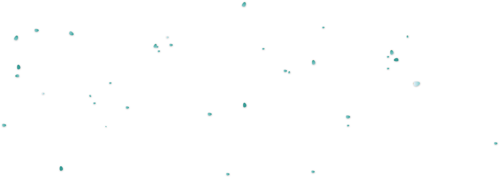
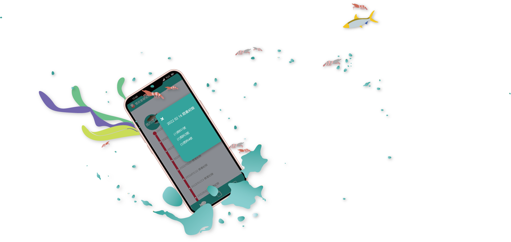
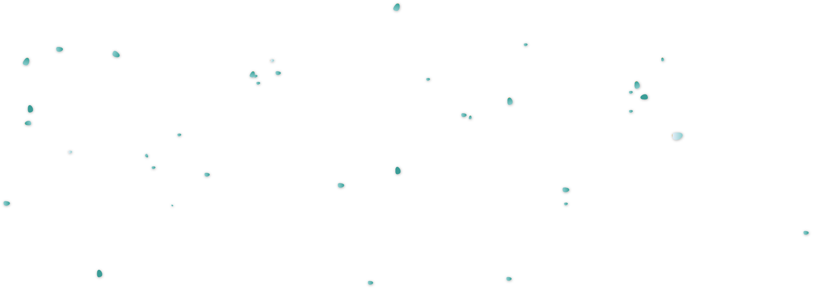
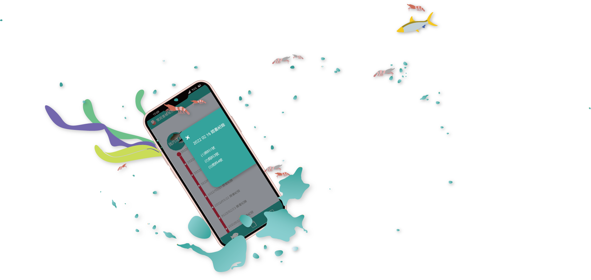

Watch fish grow!
The goal of the production and sales digital record is to let consumers track where fresh products come from and show farmers and fishermen how well their products perform in terms of quality.
We cooperate with the Council of Agriculture to develop a digital aquaculture system for fish farmers.Fishermen record feed, fertilizers, and medication data. Consumers can scan a QR code for product information, ensuring confidence in their purchase and promoting local farming.
Our partners
We have an excellent product manager, a imaginative UI/UX designer, a humorous app engineer, and a logical and meticulous back-end engineer. As a UI/UX designer, I'm responsible for conducting user interviews, designing user flows, creating interfaces, conducting usability testing, and gathering feedback.